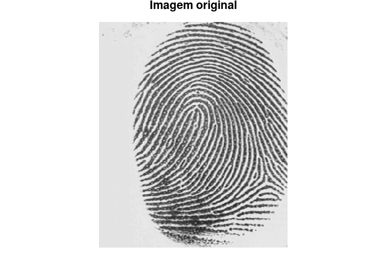

Estudante: André Alfonso Peixoto
GONZALEZ, R; WOODS, R; EDDINS, S. Digital Image Processing Using MATLAB 2. 2. ed. Gatesmark Publishing, 2009. Mathworks Stack Exchange Wikipedia
%{
Utilizando a transformada Wavelet e a teoria de sub-bandas
1. Identificar e analisar ‘ruído’ de uma imagem
2. Crie um algoritmo simples para subtrair ruído de uma imagem
- visualizar e comentar
%}
pkg load signal; pkg load symbolic; pkg load image;
img = imread("Fig0734(a).tif"); figure; imshow(img); title("Imagem original");
[c,s] = wavefast(img,3,"haar"); wavedisplay(c,s,20); [~,g8] = wavezero(c,s,3,"haar"); figure;
% imshow(g8); % title("Reconstrução com Haar"); % figure; % imshow((img - g8),[]); % title("Diferença de imagem com Haar");
[c,s] = wavefast(img,3,"db4"); wavedisplay(c,s,20); [~,g8] = wavezero(c,s,3,"db4"); figure;
% imshow(g8); % title("Reconstrução com Daubechies"); % figure; % imshow((img - g8),[]); % title("Diferença de imagem com Daubechies");
[c,s] = wavefast(img,3,"sym4"); wavedisplay(c,s,20); [~,g8] = wavezero(c,s,3,"sym4"); figure;
% imshow(g8); % title("Reconstrução com Symlet"); % figure; % imshow((img - g8),[]); % title("Diferença de imagem com Symlet");
[c,s] = wavefast(img,3,"bior6.8"); wavedisplay(c,s,20); [~,g8] = wavezero(c,s,3,"bior6.8"); figure;
% imshow(g8); % title("Reconstrução com Cohen-Daubechies-Feauveau"); % figure; % imshow((img - g8),[]); % title("Diferença de imagem com Cohen-Daubechies-Feauveau");